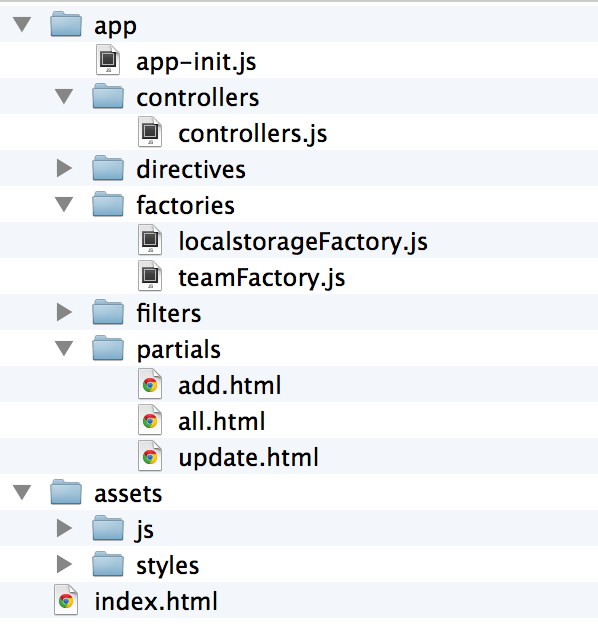

Webbramverk, 1DV450
Linnéuniversitetet, vt 2014
JavaScriptramverk
AngularJS
Första examinationen
- Torsdag - release, zipfil, se till att allt är med!
- Under fredagen delas projekten ut för peer-review (anonymt)
- En vecka på sig. Besvara ett formulär (ej klart)
- Registrera sig för den schemalagda examinationstid på kurshemsidan
- 20-30 minuter muntlig examination
Vad bygger vi?

Förklara hur jag gjort om kursen.
Lite ny mark
Nya applikationer, nya krav, ändrad kurs

Foto cc by:
http://www.flickr.com/photos/sh1mmer/
Förklara hur webben har utvecklats
JavaScript har utvecklats. Snabbare, stöd
Javascript som låtsasspråk
JS, HTML5, CSS3
SPA
Mer logik på klienten

CSS frameworks

Varför? vad gör dessa?
Nya krav på klientapplikationer
- DOM-manipulering
- Offline
- State change in client application
- Partial page update
- Server communication (AJAX, Web Sockets)
- Bookmarking, deep-link, route-handling
- Browser history
- More complex javascript software
SPA
JavaScript frameworks

AngularJS

Min erfarenhet av javascriptramverk
Varför valde jag angular?

AngularJS - Historik
Vem, vad, community, utveckling
The team

Filosofi och designmål
- Deklarativ programmering för UI (beskriv VAD som ska göras - inte HUR)
- Imperativ programmering för logik (beskriv steg för steg vad som ska göras)
- "Show HTML new tricks"- Utvecklare och designers
- Data-bindning
- Koppla från DOM-manipulering från applikationslogik
- Separation mellan klient och server
- Modulärt
Hello World!

Visa hello world
Prata om directives
Bygg vidare med lista på lag
AngularJS - Vad löser det?
- DOM-hantering (jqLite)
- Data Binding
- Routing
- Browser History
- Ajax
- Modular coding
- Cachning
- Testing
- ...
Vad ingår i angular

- Directive
- Scope
- Filters
- Controller
- Model
- Declarative partial template view
- Modules
- Dependency injection
- Services, factories, providers
Foto cc by:
http://www.flickr.com/photos/83633410@N07/

MVC / MVVM / MVW
- MVC är en högnivåarkitektur
- Har många "varianter" (MVP, MVVM, MTV)
- Har många tolkningar av olika utvecklare
- AngularJS == MVW
Foto cc by:
http://www.flickr.com/photos/nyuhuhuu/
Exempel - MVW

Visa exempel där man skapar en controller
i inline script
Prata om scope
$scope
- Används som klister mellan domänmodellen och vyn
- Innehåller både data och funktionallitet
- ViewModel? Modeller är javascriptobject som deklareras på $scope

Scopes skapas i en hierarki
- När en applikation skapas skapas $rootScope
- Vid t.ex. directivet ng-controller skpas en ny Scope-instans
- ViewModel? Modeller är javascriptobject som deklareras på $scope
- Isolerade namespace, undviker namnkrockar, effektiv minneshanering


Chrome extension:
Batarang

Inspired:
http://weblogs.asp.net/dwahlin/archive/2013/04/12/video-tutorial-angularjs-fundamentals-in-60-ish-minutes.aspx
Routing
- Ladda ner angular-route.js
- Inkludera ngRoute som modul i din applikation
- Definiera dina routes i applikationens "config"
- Flyttades ut från angular.js core från 1.2 RC1
Partial views
- SPA skiftar "states" och laddar om views i en och samma sida
- Vi vill kunna tala om vad som ska laddas in

Exempel routing och views

Modules and dependency injection
- Moduler för att organisera sin kod
- Men också för att beskriva beroenden - Dependency injections
- Enkelt att byta ut de olika delarna
- Registrera "recept" för olika objects skapande
- "Angular modules solve the problem of removing global state from the application and provide a way of configuring the injector."
- "Angular modules don't try to solve the problem of script load ordering or lazy script fetching."
Services
- Value
- Services
- Factories
- Providers
Applikationsstruktur

Visa ett practice på hur man strukturerar en javascript
applikation
Applikationsstruktur
Visa ett practice på hur man strukturerar en javascript
applikation
Nästa gång
- Jobba mot ett RESTful API
- $http, $resource...
- Custom Directives
 Denna presentation är licensierat under en
Creative Commons Erkännande 3.0 Unported Licens. (Där inte annat anges)
Denna presentation är licensierat under en
Creative Commons Erkännande 3.0 Unported Licens. (Där inte annat anges)